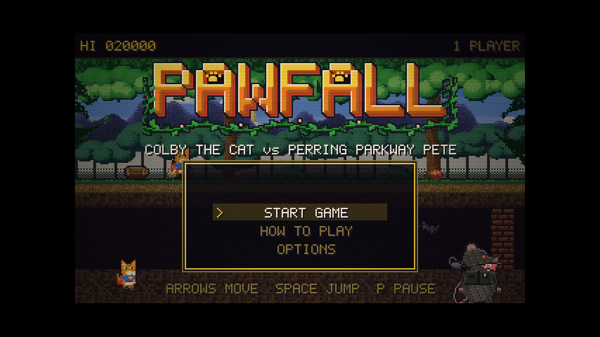
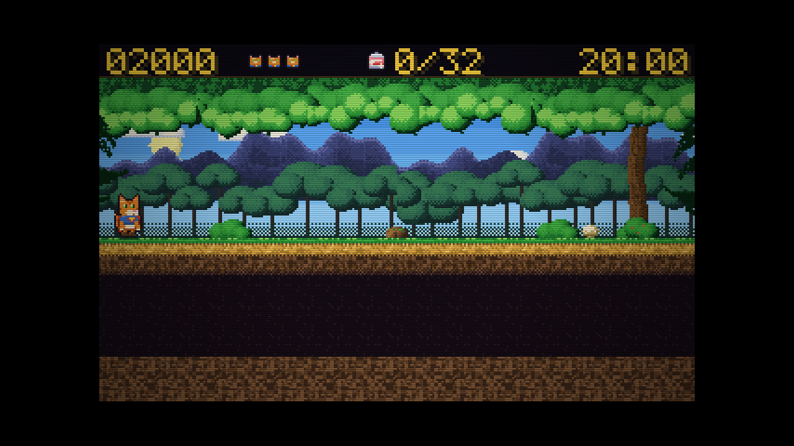
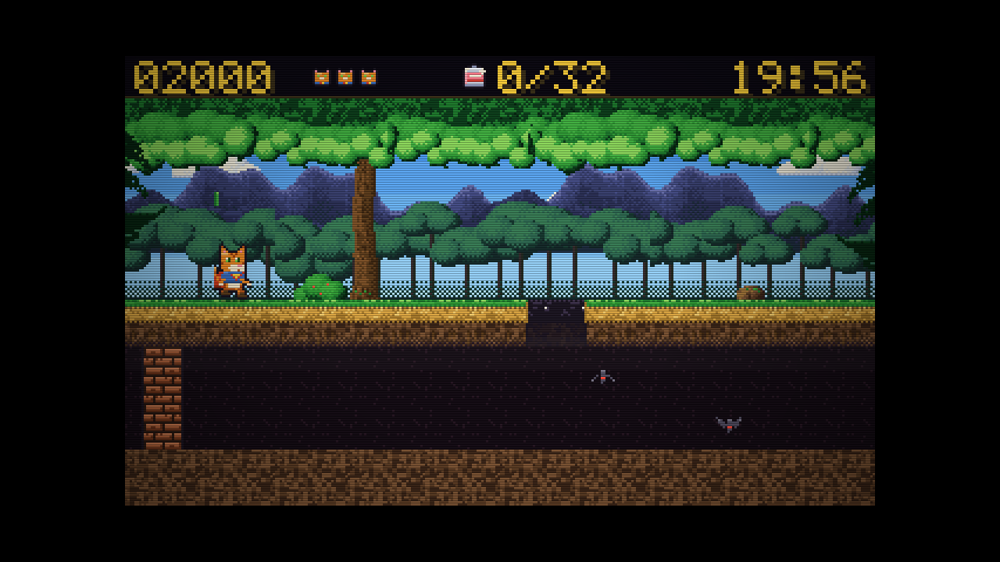
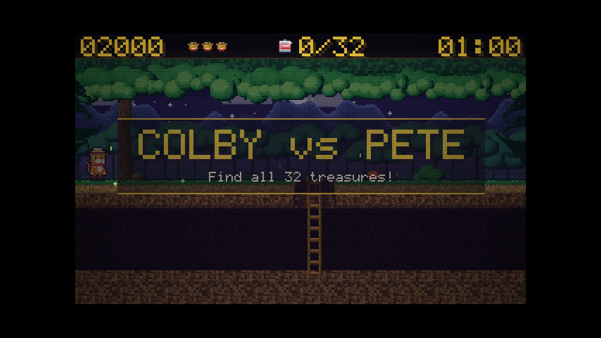
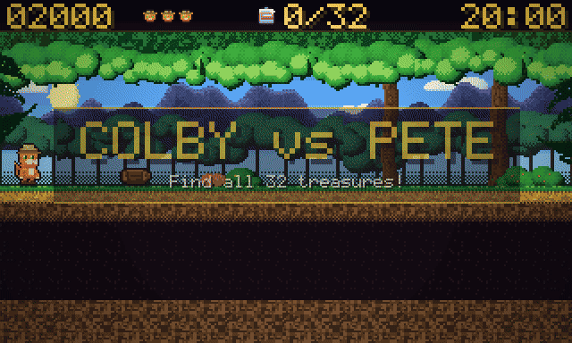
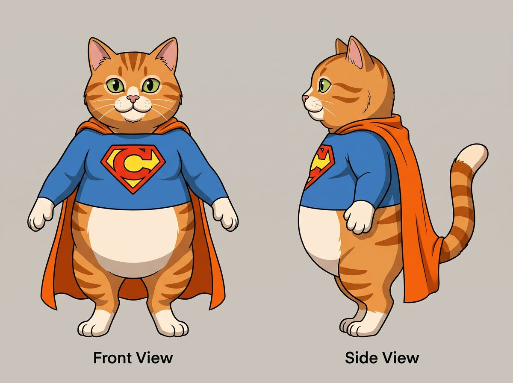
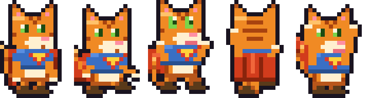
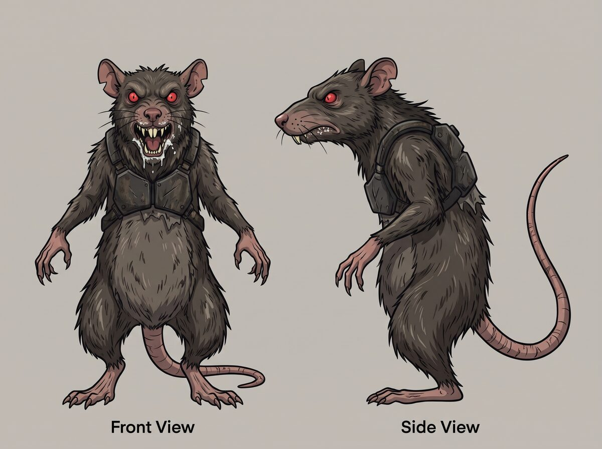
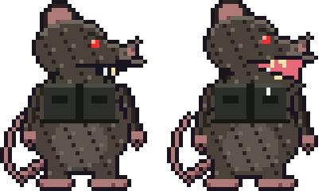

SuperColby, an orange tabby in a blue C-shield shirt and an orange cape, must cross 120 screens of a Pitfall!-style jungle and win back 32 treasures from Perring Parkway Pete, a red-eyed sewer rat in a tactical vest.

Captured from the running game. Add new captures or GIFs by copying a
<figure> block below into the gallery; they are plain files in img/.



| Action | Keys |
|---|---|
| Run | ← → (or A D) |
| Climb ladders and vines | ↑ ↓ (or W S) |
| Jump | Space Z X |
| Pause | P or Esc |
| Mute / CRT / Fullscreen | M / C / F |


A round orange tabby with green eyes, a blue shirt with a C on the shield, and an orange cape. Cat, hero, and the only one who can reach the treasures. Plays it cool even when the logs are rolling at him.
heroruns & jumps3 lives

A scruffy sewer rat with red eyes, drooling fangs, long claws and a scuffed tactical vest. He stole 32 treasures and scattered them across the jungle, then set up billboards for PETE'S PARKWAY PICKLES. He taunts you from the canopy.
villainambushesthrows cheesePawFall was built by a swarm of AI agents working in parallel. Each agent owned one module with a written contract, reported progress to a live tracker, and left a report behind.
Simulation, hazards, the world generator, Colby and Pete art, and the renderer.
Scenery, critters, FX, sound effects, music, the UI shell, and the media tracker.
An autopilot that plays the world, plus soak tuning.
This site, the docs, and the reusable factory tools that came out of the project.
Plain ES modules and Node 22. No bundler, no framework, no runtime packages.
All art is drawn into 320x192 pixel buffers from a fixed palette. Audio is synthesised with WebAudio.
The simulation uses a seeded RNG. The same seed replays the same run, which is how the autopilot tests the world.